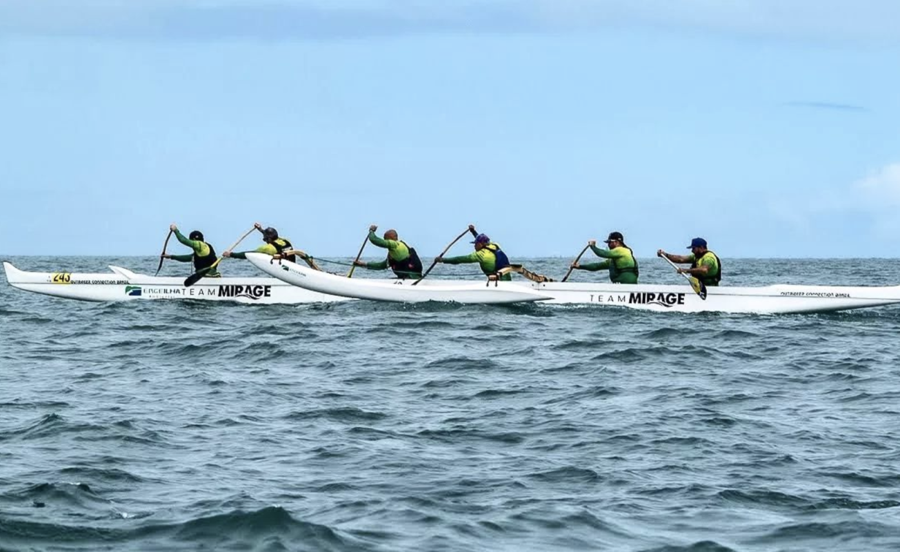
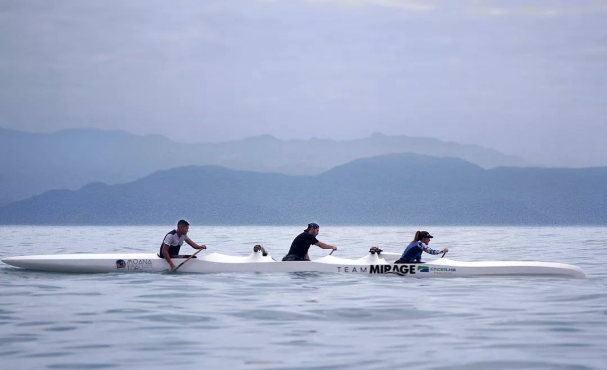
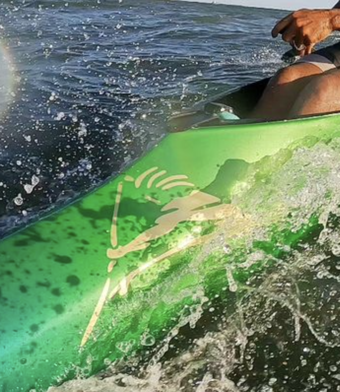

A OC6 Mirage é uma canoa consagrada no Havaí, trazendo muitas vitórias em sua história.
Ela desembarcou no Brasil em 2018 para passar por uma renovação em seu design com a Passaúna Composites & Design, que realizou melhorias e atualizações no casco, como roker, v-bottom, alinhamento, alturas e regulagens, transformando essa OC6 em uma das melhores canoas da atualidade. A integridade estrutural dá a esta canoa uma capacidade de resposta rígida que melhora a transferência de força de cada remada.
Uma canoa leve com até 160kg, feita com laminação tradicional e fabricação rápida e de grande qualidade.
Temos aqui a canoa campeã de dois circuitos brasileiros de Va’a com a equipe Team Mirage, além de ajudar diversas outras equipes a conquistarem grandes resultados em suas categorias. Nesses 4 anos mais de 300 unidades foram produzidas e entregues para todo o Brasil.
Seja sua equipe pesada ou leve, ela se beneficiará com a revolução na experiência de remar em uma OC6 Mirage.
Voltar para o topo
Com um design aerodinâmico e peso leve, a Moana Toru acelera rapidamente, exigindo menos esforço para alcançar a velocidade de cruzeiro. Suas linhas fortes e perfil imponente adicionam uma estética visual que se destaca dentre as outras.
Todo o projeto desta canoa se baseia em entregar a melhor performance para a sua equipe, em qualquer tipo de prova, em qualquer tipo de condição. Criada pelo shapper Luciano Faccini e Rafael, sócios da Life’s a Boat, usando como base a canoa Kaoha, a Moana Toru teve seu projeto passado para a Passaúna Composites & Design para realizar sua produção.
A Moana Toru é extremamente leve, resistente e rápida, muito rápida.
Saiba mais sobre V3 Moana Toru
Voltar para o topo
A V1 Timi Va’a é uma canoa taitiana legítima, ou seja, possui alguns diferenciais em relação às OC1, como cockpit mais fechado e ausência do leme. Mas a grande mudança desse modelo é a opção por iacos de encaixe ou amarração.
Apesar do iaco de amarração ser o mais tradicional, ter um iaco de encaixe facilita a montagem e desmontagem da canoa, principalmente na hora de guardar. Outra característica é que os iacos são feitos de alumínio e não de madeira como os tradicionais. O alumínio não possui a flexibilidade dos outros materiais, portanto não perde desempenho no tempo de resposta, sem riscos de torcer a canoa.
Ou seja, além de melhorar o desempenho, ser leve e ter um custo menor, os iacos de encaixe proporcionam uma montagem e desmontagem fácil e a possibilidade de testar e repetir regulagens.
O designer de canoas Diego Vale é detentor da licença da V1 Timi original Tahiti no Brasil, produzida na Passaúna Composites & Design!
Voltar para o topo